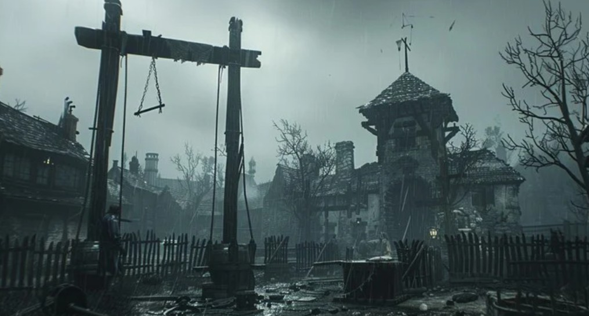

You decide to go it alone and help yourself, as you walk about a quarter of a mile down the route you enter what looks like an abandoned town. Piles of woods that were once houses litter the road dead fall leaves and an old well sit lonely in the middle of what once was a lively place; and as you make your way through the first thing you hear other than yourself is the sound or rustling, crunching leaves...